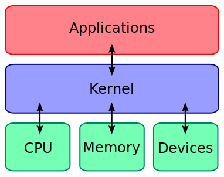
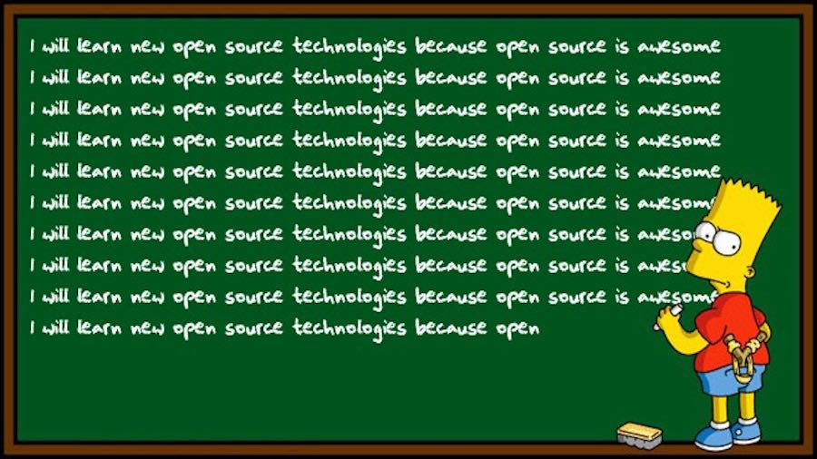

Operating Systems
But First...
What Do It Do?

Operating System Kernel



UNIX + BSD
Is their story a warning against closed source software?
Linux
An Important Reminder
Linux Distributions
What can you learn about a Linux distribution?